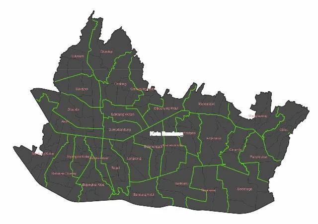

Sejarah

Kata Bandung berasal dari kata bendungan karena terbendungnya sungai
citarum oleh lava Gunung Tangkuban Perahu yang lalu membentuk telaga. Legenda yang
diceritakan oleh orang-orang tua di Bandung mengtakan bahwa nama Bandung diambil dari
sebuah kendaraan air yang terdiri dari dua perahu yang diikat berdampingan yang disebut
perahu bandung yang digunakan oleh Bupati Bandung, R.A. Wirantaukusumah IT, untuk
Melayari Ci Tarum dalam mencari tempat kedudukan kabupaten yang baru untuk
ibu kota yang lama di Dayeuhkolot.
Berdasarkan filosofi sunda, kata bandung juga berasal dari kalimat Nga-Bandung-an Banda
Indung, yang merupakan kalimat sakral dan luhur karena mengandung nilai ajaran Sunda.
Nga-Bandung-an artinya menyaksikan atau bersaksi.Banda adalah segala suatu yang
berada di alam hidup yaitu di bumi dan atmosfer, baik mahkluk hidup maupun benda mati.
Sinonim dari banda adalah harta. Indung berarti Ibu atau Bumi, disebut juga sebagai ibu
pertiwi tempat Banda berada.
Geografis

Kota Bandung dikelilingi oleh pengunungan, sehingga bentuk morfologi wilayahnya bagikan
Sebuah mangkok raksasa,[9] secara geografis kota ini terletak di tengah-tengah provinsi
Jawa Barat, serta berada pada ketinggian +768 m din atas permukaan laut, dengan titik
tertinggal di berada di sebelah utara dengan ketinggian 1.050 meter di atas permukaan
laut dan sebelah selatan merupakan kawasan rendah dengan ketinggian 675 meter di atas
permukaan laut.
Kota Bandung daliri dengan dua sungai utama, yaitu Sungai Cikapundang dan Sungai citarum
beserta anak-anak sungainya yang pada umumnya mengalir ke arah selatan dan bertemu
Sungai Citarum, Dengan kondisi yang demikian, Bandung selatan sangat rentan terhadap
masalah banjir terutama pada musim hujan.
Wisata
.jfif)
Sejak dibukanya Jalan Tol Cipularang, Kota Bandung telah menjadi tujuan utama dalam
menikmati liburan akhir pekan terutama dari masyarakat yang berasal dari Jakarta
sekitarnya, Selain menjadi kota wisata belanja, kota Bandung juga dikenal dengan
sejumlah besar bangunan lama berarsitektur prninggalan Belanda.
Farm House Lembang

Berada di jalur utama Bandung-Lembang, Farm House menjadi objek wisata yang tidak
pernah sepi pengunjung. Selain karena letaknya strategis,kawasan ini juga
menghadirkan nuansa wisata khas Eropa. Semua itu diterapkan dalam bentuk spot swatrfoto
Intagramble.
Observatorium Bosscha

Memiliki beberapa teleskop, antara lain, Refraktor Ganda Zeiss, Schmidt Bimasakti
Refraktor Bambreg, Cassegrain GOTO, dan Teleskop Surya. Refraktor Ganda Zeiss adalah
jenis teleskop terbesar untuk meneropong bintang. Benda ini diletakan pada atap kubah
sehingga saat teropong digunakan, atap tersebut harus dibuka, Observatorium Bosscha
boleh dikunjungi oleh siapapun, tanpa tiket. Namun, bagi yang ingin menggunakan
teleskop Zeiss, wajib mendaftarkan diri. untuk intansi atau lembaga pendidikan,
diberikan jadwal hari selasa sampai jumat. Sementara itu, kunjungan individu dibuka
setiao hari sabtu.